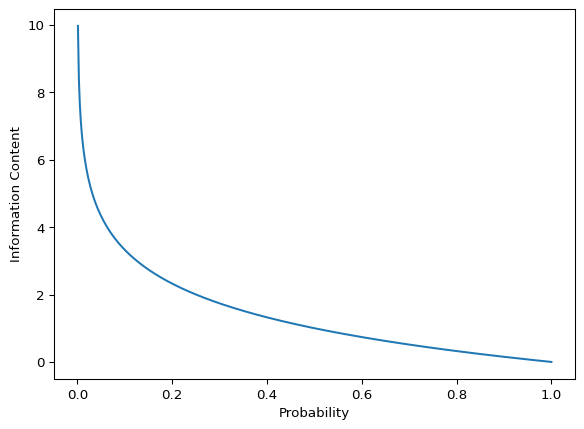

% Meta %
% Optional argument [#1]: Size modifier (e.g., , ) % #2: Opening delimiter % #3: Closing delimiter % #4: Content
% Common sets % Real numbers % Integers % Natural numbers % Rational numbers % Complex numbers
% Probability and statistics % Expectation % Variance % Covariance % Probability measure % Indicator function
% Linear algebra % Matrix% Vector % Trace % Rank % Range (image) % Projection
% Calculus and analysis % For integrals, e.g., f(x) x % Partial derivative \newcommand{[2]}{ #1} % Partial derivative w/o fraction% Second partial derivative % Gradient % Divergence % Curl
% Set theory % Set% Set builder notation % Union % Intersection % Symmetric difference
% Logic and proofs % Implies % If and only if % End of proof % Contradiction
% Norms and inner products % Norm% Inner product
% Common functions % Minimization problem % Maximization problem % Argument minimum % Argument maximum
% Subject to constraints % Sign function % Span of a set
% Formatting % Absolute value % Parentheses % Brackets % Floor function% Ceiling function
% Asymptotic notations % Big O notation % Small o notation % Big Omega notation % Big Theta notation
% Commonly used in algorithms and complexity % Polynomial time % Polylogarithmic time
% Additional probability notations % Independent and identically distributed % Distributed as
% Fourier transform % Fourier transform % Inverse Fourier transform
% General math % Display style
1 Introduction
Every now and then, I find myself revisiting the basics of Information Theory when reading on papers about VAEs, GANs, or other generative models. I decided to compile a brief overview of the concepts for my own reference. Take it with a grain of salt, as it’s not meant to be a comprehensive guide.
I’ll update this post as I learn more about the topic, so stay tuned!
2 Entropy
Entropy is a fundamental concept in information theory that quantifies the uncertainty or randomness in a system. Let’s consider a couple of examples:
Imagine you’re trying to guess the next card drawn from a deck. With a well-shuffled deck, each draw is unpredictable – this scenario has high entropy. On the other hand, if the cards were arranged in a known order, each draw would be predictable – this has low entropy.
Now, let’s think about weather prediction. In a climate where it rains 90% of the days, predicting rain is usually correct but not very informative. This scenario has lower entropy than a climate where rain and sun are equally likely (50% each), making predictions more challenging and uncertain.
2.1 Information Content
We quantify the uncertainty or information content of an event \(x\) with probability \(p(x)\) as:
\[I(x) = -\log_2{p(x)}\]
It measures the surprise or “news value” of observing event \(x\). \(I(x)\) is also reffered to as the number of bits needed to encode the event, but we’ll get to that later.
Why use \(-\log p\)? Let’s visualize it:
This function captures several intuitive properties:
- Rare events (low \(p\)) have higher information content, as \(\displaystyle{\lim_{p \to 0^+} (-\log{p}) = +\infty}.\)
- Certain events (\(p = 1\)) have zero information content.
- The negative sign ensures positive information values.
2.2 Shannon Entropy
Shannon entropy is the expected value (weighted average) of information content across all possible events in a probability distribution:
\[H(X) = \mathbb{E}[-\log p(X)] = -\sum_x p(x) \log{p(x)} \tag{1}\]
Note
If \(p(x) = 0\), we define \(0 \log{0} = 0\) since \(\displaystyle{\lim_{p \to 0^+} p\log{p} = 0}\) and can be proven using L’Hôpital’s rule.
To put this into perspective, English text typically has an entropy of about 1-1.5 bits per character. In comparison, a random string of characters over the same alphabet has an entropy of \[\mathbb{E}[-\log_2{p(X)}] = -\sum\limits_{i=1}^{26} \frac{1}{26} \log_2(\frac{1}{26}) = \log_2(26) \approx 4.7\] bits per character.
This concept has practical applications in various fields. For instance, in cybersecurity, a truly random string of characters (like a strong password) approaches the maximum entropy of \(\log_2(n)\) bits per character, where \(n\) is the number of possible characters. The password “password123” has low entropy and is easily guessable, while “Tr0ub4dor&Co” has higher entropy and is more secure. This difference in entropy reflects the varying degrees of unpredictability and, consequently, the strength of these passwords.
2.3 A bit of history
The terms “coding” and “encoded” in information theory stem from Claude Shannon’s work on efficient information transmission over noisy channels. Entropy \(H(X)\) represents the theoretical lower bound on the average number of bits needed to encode symbols from a source, which is why we measure it in bits (using log base 2) - it directly relates to optimal coding length.
Shannon’s Source Coding Theorem formalizes this: no lossless compression can exceed this efficiency on average. This explains why English text (~1.5 bits of entropy per character) compresses far more than random text (~4.7 bits per character), and why compression algorithms excel with natural language but struggle with random data. Understanding entropy as a limit on coding efficiency makes it a powerful tool across various domains like data compression, cryptography, and machine learning.
3 Cross Entropy
Imagine you have a source that produces messages according to a true distribution \(P\), but you’re using a different distribution \(Q\) to encode these messages. Cross-entropy measures the average number of bits you’ll need using this possibly inefficient encoding.
For example, consider describing a language you’ve never seen before. You start by guessing how often each letter appears.
- The true frequency (\(P\)) of letters in this language is: \(A: 40\%, \; B: 40\%, \; C: 20\%\)
- Your initial guess (\(Q\)) is: \(A: 60\%, \; B: 30\%, \; C: 10\%\)
Now, let’s use your guess to “encode” messages in this language, i.e., calculate its uncertainty:
- For each ‘A’, we use \(-\log_2{0.6} \approx 0.74\) bits
- For each ‘B’, we use \(-\log_2{0.3} \approx 1.74\) bits
- For each ‘C’, we use \(-\log_2{0.1} \approx 3.32\) bits
To calculate the average number of bits per letter, we use \(P\)’s frequencies because that’s how often each letter actually appears, while \(Q\) determines the cost for each letter. This combination tells us the real-world performance of our encoding scheme.
\[ 0.4 \times 0.74 + 0.4 \times 1.74 + 0.2 \times 3.32 \approx 1.57 \text{ bits per letter}\]
The resulting average, \(H(P,Q) \approx 1.57\) bits, represents the typical encoding cost per letter when our guess (\(Q\)) is used to encode messages that actually follow the true distribution (\(P\)).
This approach mirrors how we evaluate predictions in ML: Our model makes guesses (Q), but the world behaves according to the true probabilities (P). Cross-entropy quantifies the average encoding length under this scenario.
Formal Definition:
The cross-entropy between two probability distributions \(p\) and \(q\) over the same underlying set of events measures the average number of bits needed to identify an event drawn from the set, if a coding scheme used for the set is optimized for an estimated probability distribution \(q\), rather than the true distribution \(p\).
\[H(P, Q) = -\sum\limits_{x \in X} p(x)\log{q(x)} = \mathbb{E}_{x \sim P}[-\log{q(x)}] \tag{2}\]
Note
If \(p(x) > 0\) and \(q(x) = 0\) for some \(x\), then \(p(x)\log{q(x)}\) is undefined. To address this we can add a small epsilon to \(q(x)\) to avoid \(\log{0}\). In fact, this is a common practice in ML libraries.
Binary Cross-Entropy:
In binary classification, we deal with two classes, and the predicted probability for one class inherently determines the probability for the other. If \(q\) is the predicted probability of the positive class (class 1), then \(1-q\) is the probability of the negative class (class 0). The binary cross-entropy loss combines the log-likelihood terms for both possible classes (positive and negative) into a single expression. For a single data point, it is defined as:
\[-\left[y\,log(q)\;+\;(1−y)\,log(1−q)\right]\]
4 Kullback–Leibler Divergence
To measure the expected number of extra bits required to code samples from \(P\) using a code optimized for \(Q\) rather than the code optimized for \(P\), we use the Kullback-Leibler divergence. It
\[ \begin{aligned} D_{KL}(P \;\Vert\; Q) &= H(P, Q) - H(P) && \hspace{-2em}\text{\small{(extra bits to code $P$ using $Q$)}} \\[3ex] &= \mathbb{E}_{x \sim P}[-\log q(x)] - \mathbb{E}_{x \sim P}[-\log p(x)] \\[3ex] &= -\sum\limits_{x \in X} p(x)\log{q(x)} + \sum\limits_{x \in X} p(x)\log{p(x)} \\[1ex] &= \sum\limits_{x \in X} p(x)\log{\frac{p(x)}{q(x)}} && \hspace{-2em}\text{\small{(as $\log{a} - \log{b} = \log{\frac{a}{b}}$)}} \end{aligned} \tag{3}\]
The relative entropy \({D_{\text{KL}}(P\parallel Q)}\) quantifies how far the distribution \(Q\) is from the distribution \(P\). The cross-entropy alone cannot be thought of as a distance, since \({H(P,P)=:H(P)}\) isn’t zero. This can be fixed by subtracting \({H(P)}\) to make \({D_{\text{KL}}(P\parallel Q)}\) agree more closely with our notion of distance, as the excess loss.
Note
KL divergence is asymmetric, i.e. \({D_{\text{KL}}(P\parallel Q)\neq D_{\text{KL}}(Q\parallel P)}\) except when \(P = Q\).
4.1 Non-Negativity
If \(Q = P\), then \(D_{KL}(P \;\Vert\; P) = H(P, P) - H(P) = 0\). But is zero the lower bound for \(D_{KL}\)? Basically the question is whether: \[H(P, Q) \stackrel{?}{\geq} H(P) \quad \forall P, Q\]
This is known as Gibbs’ inequality, and it’s a fundamental property of the Kullback-Leibler divergence. It tells us that if you try to use a probability distribution \(Q\) to encode data that actually follows a different distribution \(P\), you will always need more bits on average, compared to using \(P\) itself.
To prove \(D_{KL}(P \;\Vert\; Q) \stackrel{?}{\ge} 0\), we can use the fact that \(-\log\) is a convex function (see Figure 1). By Jensen’s inequality, we have:
\[ \begin{aligned} \sum\limits_{x} p(x)\log{\frac{p(x)}{q(x)}} &= \sum\limits_{x} p(x)\times -\log{\frac{q(x)}{p(x)}} \\[2ex] &\ge -\log\left(\sum_{x} p(x) {\frac{q(x)}{p(x)}}\right) && \text{\small{(Jensen's inequality)}} \\[2ex] &= -\log\left(\sum_{x} q(x)\right) = -\log {1} && \text{\small{(sum of probabilities = 1)}} \\[2ex] & = 0 \end{aligned} \] \[ \therefore \quad D_{KL}(P \;\Vert\; Q) \ge 0\]
Jensen’s Inequality
Jensen’s inequality states that for a convex function \(f\) and a random variable \(X\):
\[f(\mathbb{E}[X]) \leq \mathbb{E}[f(X)]\]
Similarly, for a concave function \(f\): \[f(\mathbb{E}[X]) \geq \mathbb{E}[f(X)]\]
4.2 At Zero Probabilities
Let’s consider the cases where \(p(x) = 0\) or \(q(x) = 0\), because it’ll be useful later on:
\(p(ùëã)=0 \text{ and } q(ùëã)\gt 0\):
As a result, \(\displaystyle\lim_{p \to 0} p\log{p} = 0\). This makes sense since we sample according to distribution \(p\), we‚Äôll never sample event \(x\). Hence, it does not weight in \({D_{KL}(P \;\Vert\; Q)}\), meaning \(Q\) can make mistakes about events that \(P\) considers impossible without penalty.\(p(ùëã)\gt 0 \text{ and } q(ùëã)= 0\):
Then \(\displaystyle\lim_{q \to 0^+} \log{\frac{1}{q}} = +\infty\). An infinite divergence effectively signals that the model \(Q\) fails to account for an event \(x\) that is observed under \(P\).\(p(ùëã)=0 \text{ and } q(ùëã)= 0\): Then it‚Äôs really undefined :)
4.3 Reverse KL vs Forward KL
This is something that I had never thought about before, because I had only seen KL divergence in the context of variational inference. But it turns out that there are two ways to use KL divergence in an optimization problem. The practical difference between the two arises when the model cannot perfectly fit the true distribution, which is most often the case. This is where the two divergences diverge (pun intended).
Let’s say we have a model \(Q\) that we want to optimize to approximate the true distribution \(P\). It’d be fair assumption that \(P\) would be a more complex distribution than \(Q\), with more modes and a more complex structure, since \(Q\) is a simpler model. As example, \(P\) could be a Gaussian mixture model with 10 components (multimodal), while \(Q\) is a single Gaussian (unimodal).
We had previously established that \(D_{KL}\) is asymmetric. This means that minimizing \(D_{KL}(P \;\Vert\; Q)\) is not the same as minimizing \(D_{KL}(Q \;\Vert\; P)\). The former is known as the Forward KL and the latter is known as the Reverse KL. Let’s look into each of them.
Forward KL
\(D_{KL}(P \;\Vert\; Q)\) measures the extra bits needed to encode samples from \(P\) using a code optimized for \(Q\). By minimizing this, we’re trying to make \(Q\) as close as possible to \(P\):
\[ \begin{aligned} \mathop{\mathrm{arg\,min}}\limits_Q\; D_{KL}(P \;\Vert\; Q) &= \mathop{\mathrm{arg\,min}}\limits_Q\; H(P, Q) - H(P) \\[1ex] &= \mathop{\mathrm{arg\,min}}\limits_Q\; H(P, Q) && \text{\small{(since $H(P)$ is constant w.r.t. $Q$)}} \\[1ex] &= \mathop{\mathrm{arg\,min}}\limits_Q\; -\sum\limits_{x \in X} p(x)\log{q(x)} \end{aligned} \]
So basically minimizing the forward KL is equivalent to maximizing the cross-entropy between \(P\) and \(Q\), a common objective in supervised classification problems. As I previously mentioned in Section 4.2, this loss ladnscape is interesting around zero probabilities:
- If \(p(x) = 0\) then \(q(x)\) can be anything, because the loss is zero. The con of this is that it can lead to overconfident predictions in regions with little data.
- If \(P(x) \gt 0\) and \(Q(x) \le \epsilon\), then the loss becomes significanly large. As a consequence, \(Q\) would rather assign a low probability to events that are very unlikely under \(P\) than missing them entirely.
In the interactive plot below you can see how the forward KL divergence changes as you adjust the mean and variance of the Gaussian distribution \(Q\).
As you can see, the minimum as achieved when \(Q\) is spread out enough to cover the modes of \(P\). This is the mean-seeking behavior of the forward KL divergence.
Reverse KL
\(D_{KL}(Q \;\Vert\; P)\) measures the extra bits needed to encode samples from \(Q\) using a code optimized for \(P\). Similar to the Section 4.2 analysis:
- It penalizes distributions \(Q\) that assign non-zero probability to regions where p is zero. Conversely, it doesn’t penalize \(Q\) for missing regions where \(P\) has non-zero probability. This is called zero-forcing.
- It tends to capturing the dominant mode of \(P\) and ignoring the rest.
The plot below is same as the previous one, but this time it the contour plot shows the reverse KL divergence.
You can see how the minimum is achieved when \(Q\) is concentrated around the dominant mode of \(P\). This is the mode-seeking/zero-forcing behavior of the reverse KL divergence. This property makes it desirable in the context of density estimation and variational inference.
4.4 Relations to Mutual Information
Let \((X,Y)\) be a pair of random variables with values over the space \({\mathcal {X}}\times {\mathcal {Y}}\). If their joint distribution is \({P_{(X,Y)}}\) and the marginal distributions are \({P_{Y}}\) and \({P_{Y}}\), the mutual information is defined as:
\[{I(X;Y)=D_{\mathrm {KL} }(P_{(X,Y)}\|P_{X}P_{Y})} \tag{4}\]
Notice, as per property of the KL divergence that \(I(X;Y)\) is equal to zero precisely when the joint distribution coincides with the product of the marginals, i.e. when \(X\) and \(Y\) are independent (and hence observing \(Y\) tells you nothing about \(X\)). Intuitively, \(I(X;Y)\) is a measure of the price for encoding \((X,Y)\) as a pair of independent random variables when in reality they may not be.
Mutual information can also be expressed using conditional entropy:
\[{I(X;Y) \equiv H(X) - H(X \vert Y)}\]
Check out this video for a more detailed explanation: [1]
5 Jensen-Shannon Divergence
JS divergence is a symmetric measure, derived from KL divergence, and it does satisfy the properties of a metric. It is defined as the average of the KL divergence from each distribution to the average of both distributions:
\[{JS(P \;\Vert\; Q) = \frac{1}{2}KL(P \;\Vert\; M) + \frac{1}{2}KL(Q \;\Vert\; M)} \tag{5}\]
where \(M=\dfrac{1}{2} (P+Q)\) is a mixture of \(P\) and \(Q\).
The averaging process and the introduction of \(M\) ensure that the divergence remains finite, even if one distribution assigns zero probability to an event that the other distribution assigns a positive probability.
This can be a desirable property in scenarios where you want a more stable and bounded measure of divergence. However, it also means that JS divergence is less sensitive to cases where one distribution completely ignores an event that the other considers possible.
References
[1]
J. Explains, “A RIDICULOUSLY AWESOME SUMMATION: Mutual information and kullback-leibler divergence.” https://www.youtube.com/watch?v=RaTe3dhiqdE, 2021.
[2]
E. Jang, “A beginner’s guide to variational methods: Mean-field approximation.” https://blog.evjang.com/2016/08/variational-bayes.html, 2016.
[3]
A. Jones, “KL(q||p) is mode-seeking.” https://andrewcharlesjones.github.io/journal/klqp.html.
[4]
T. A. Le, “Reverse vs forward KL.” https://www.tuananhle.co.uk/notes/reverse-forward-kl.html, 2017.
[5]
Reddit, “Why train with cross-entropy instead of KL divergence in classification?” https://www.reddit.com/r/MachineLearning/comments/4mebvf/why_train_with_crossentropy_instead_of_kl/, 2016.
Reuse
Citation
BibTeX citation:
@online{sarang2024,
author = {Sarang, Nima},
title = {My {Notes} on {Information} {Theory}},
date = {2024-08-24},
url = {https://www.nimasarang.com/blog/2024-08-24-information-theory/},
langid = {en}
}
For attribution, please cite this work as:
N.
Sarang, “My Notes on Information Theory.” [Online].
Available: https://www.nimasarang.com/blog/2024-08-24-information-theory/